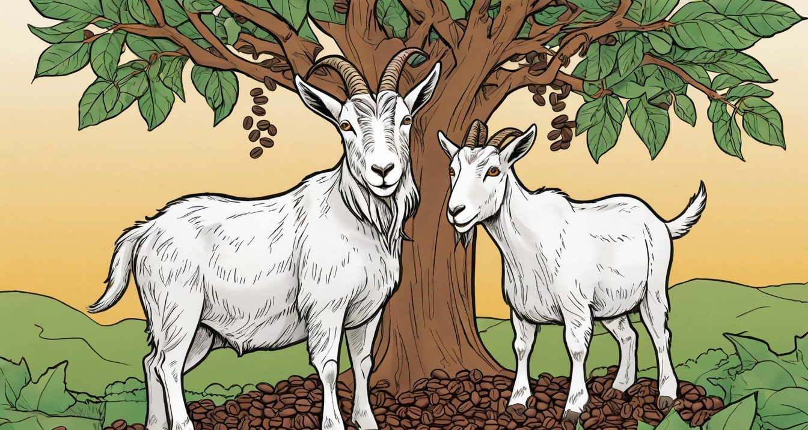
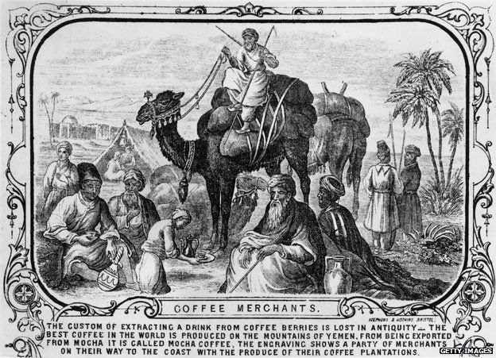
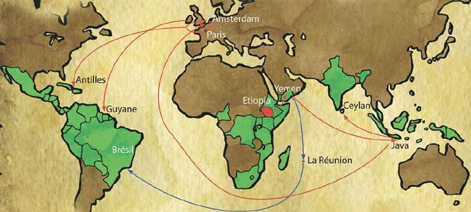
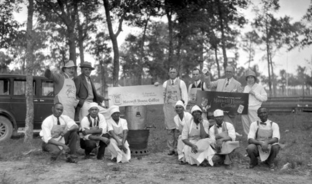

The Coffee
The Coffee The Mythical Beginnings: Ethiopia
The story of coffee beans begins, as many legends do, with a watchful goat herder in ancient Ethiopia. The popular tale attributes the discovery of coffee to Kaldi, a young goat herder who noticed his goats becoming unusually energetic after eating red berries from a certain tree. Curious, he tasted the berries himself and felt a similar invigorating effect.
He shared his findings with the abbot of a local monastery, who initially dismissed the berries as the devil's work and threw them into a fire. However, the enticing aroma that wafted from the roasting beans prompted the abbot to rake them from the embers. He then ground them, dissolved them in hot water, and drank the concoction, finding that it helped him stay awake during long hours of prayer. Thus, the world's first cup of coffee was supposedly brewed.
Legend has it that coffee was discovered by a goat herder in Ethiopia.
The Sacred Brew: Spread to the Arabian Peninsula
From its humble beginnings in Ethiopia, coffee made its clandestine journey across the Red Sea to the Arabian Peninsula, primarily Yemen, around the 15th century. Here, it was first systematically cultivated and traded. Sufi mystics were among the first to appreciate its stimulating effects, using it to prolong their hours of devotion and contemplation.
The popularity of coffee quickly spread throughout the Islamic world. By the 16th century, it had reached Persia, Egypt, Syria, and Turkey. Coffee houses, known as *qahveh khaneh*, became integral social and intellectual hubs. These establishments were more than just places to drink; they were centers for conversation, music, storytelling, and even political discourse, shaping the cultural landscape of the time.
Arabian ride camel and written Coffee Merchant.
The meticulous preparation of coffee became an art form, especially in the Ottoman Empire, where elaborate rituals for serving coffee were developed, reflecting its esteemed status. The mystique surrounding coffee, combined with its invigorating properties, led to its rapid adoption across diverse cultures.
"As soon as the coffee is in your stomach, there is a general commotion. Ideas begin to stir... the ideas move like battalions of a grand army on the battlefield."
— Honoré de Balzac
From Controversy to Culture: Coffee Reaches Europe
Coffee arrived in Europe in the 17th century, initially met with skepticism and even condemnation. Some European clergymen referred to it as "Satan's bitter invention." However, Pope Clement VIII, upon tasting the beverage, famously declared it "so delicious that it would be a pity to let the infidels have exclusive use of it." His blessing opened the floodgates.
Venice, a major trading hub, was among the first European cities to embrace coffee. The first coffee house opened in England in 1652, and soon, "penny universities" (as they were known, due to the cost of a cup) sprouted across Europe. These establishments became vibrant centers of intellectual exchange, business dealings, and social gathering, playing a significant role in the Enlightenment era.
Trade root from arabian peninsula, Europe, and the Americas.
The insatiable demand for coffee fueled its cultivation in new territories. The Dutch were pioneers, establishing thriving coffee plantations in their colonies like Java (Indonesia) and Ceylon (Sri Lanka). The French, too, contributed to its global spread by introducing coffee to the Americas.
The Global Phenomenon: Coffee in the Americas and Beyond
The journey of coffee to the Americas is often attributed to Gabriel de Clieu, a French naval officer who, in 1723, braved a perilous journey to transport a single coffee seedling from the Royal Botanical Garden in Paris to Martinique. This one plant is believed to be the progenitor of countless coffee trees across the Caribbean and Central and South America.
Brazil, with its vast fertile lands and ideal climate, quickly became the world's largest coffee producer, a position it still largely holds today. The expansion of coffee cultivation dramatically reshaped the economies and societies of many Latin American nations, creating a global commodity that transcended borders.
Maxwell Coffee House.
Today, coffee is not just a beverage; it's a global industry, a cultural touchstone, and an integral part of daily life for billions. Its journey from a humble Ethiopian berry to a worldwide phenomenon is a testament to its enduring appeal and its profound impact on human history.
Explore More Coffee Facts